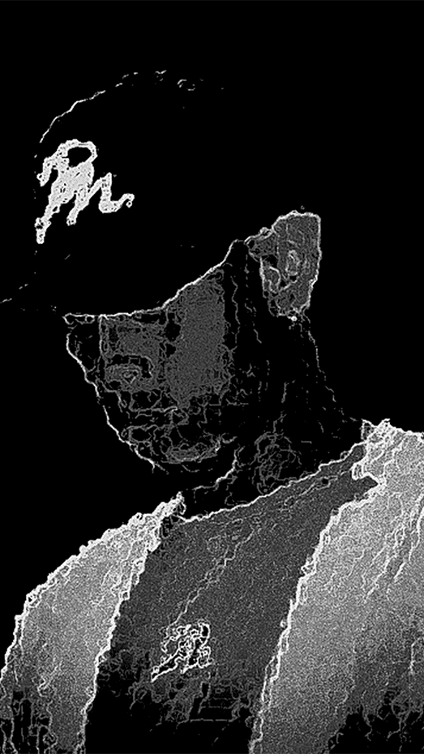
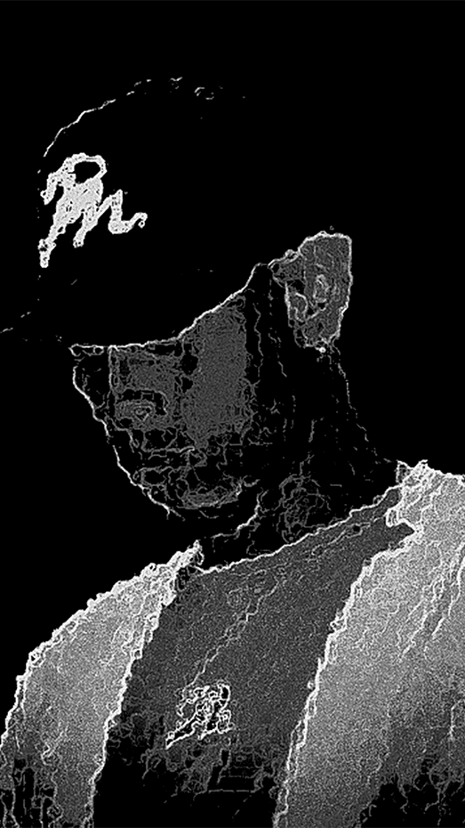

J&M surge en la búsqueda de una identidad única y en evolución, brindando un aspecto estético minimalista pero con un contexto profundo. Esta colección “Distorsión Natural” se expresa a través de figuras clásicas con un lenguaje moderno.
Route Wave Records es un proyecto audiovisual compartido con Jacobo Beltrán, centrado en la creación de experiencias inmersivas que fusionan sonido e imagen. Nuestro primer evento como sello discográfico, fue el "Live Set Audiovisual: Velas en la Oscuridad", En aquella ocasión, fusionamos sonido e imagen en una experiencia inmersiva con música ambient experimental.
 
